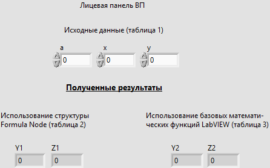
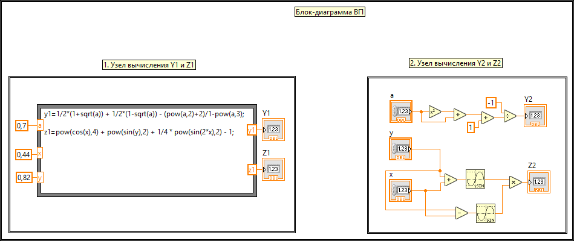
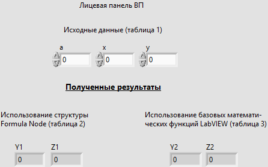
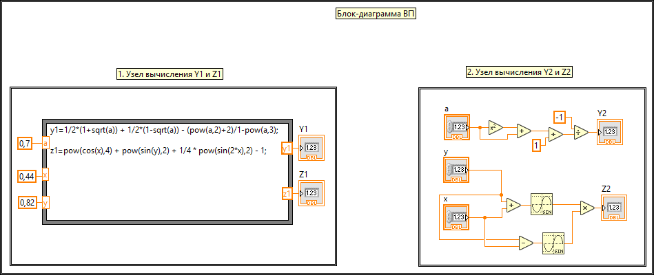

Лабораторная работа №1
Задание для варианта №8
- Разработать виртуальный прибор, который вычисляет значения двух эквивалентных числовых формул y1?y2, z1?z2 с указанными в варианте индивидуального задания значениями исходных данных;
- Вычисление числовых формул y1, z1 выполнить с помощью структуры Formula Node;
- Вычисление числовых формул y2, z2 выполнить с помощью базовых математических функций LabVIEW;
Примечание
Две числовых формулы эквивалентны, если для всех возможных значений переменных их математические значения равны; Будем считать, что значения эквивалентны, если они отличаются не более чем на 10–5
 


